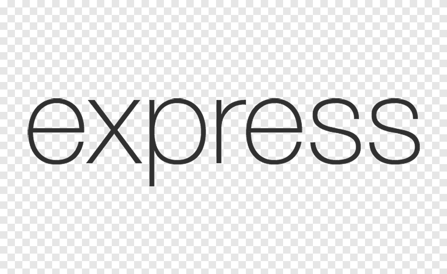
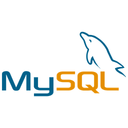
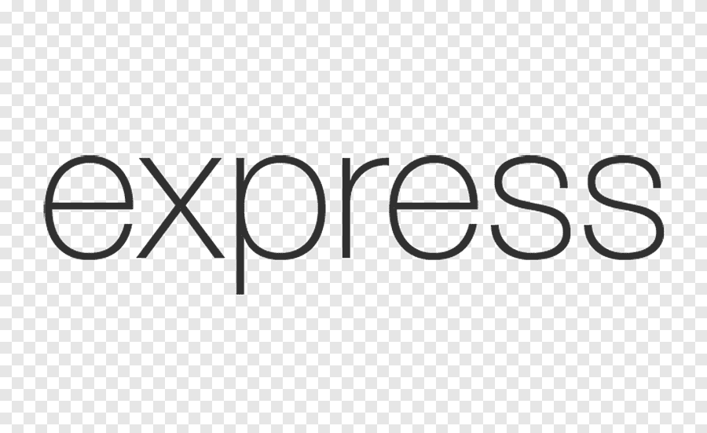
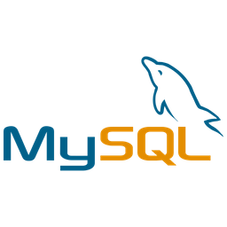

Mes Projets
La Stack :
 



|
|---|
|
Ce projet m’a servi de terrain d’apprentissage pour le développement frontend et backend,
en évoluant au fil des défis rencontrés dans mon travail d’assureur. Il repose sur des concepts essentiels tels que le CRUD,
l’optimisation des interfaces, la gestion du lazy loading, et bien d’autres bonnes pratiques de développement. Grâce à ce projet, j’ai pu automatiser et simplifier mes tâches quotidiennes, en transformant des processus manuels en solutions efficaces et intuitives. Chaque fonctionnalité a été pensée pour répondre à des besoins réels, tout en consolidant mes compétences en développement web. |